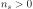
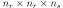

SymmetricTensor¶
-
class
SymmetricTensor(*args)¶ Symmetric tensor.
- Available constructors:
SymmetricTensor(n_rows, n_sheets)
SymmetricTensor(n_rows, n_sheets, values)
SymmetricTensor(sequence)
Parameters: n_rows : int,

Number of rows and columns.
n_sheets : int, 
Number of sheets.
values : sequence of float with size , optional
Values. column-major ordering is used (like Fortran) for reshaping the flat list of values. If not mentioned, a zero tensor is created.
sequence : sequence of float
Values.
Examples
>>> import openturns as ot >>> print(ot.SymmetricTensor(2, 2, [0, 1])) sheet #0 [[ 0 1 ] [ 1 0 ]] sheet #1 [[ 0 0 ] [ 0 0 ]] >>> T = ot.SymmetricTensor(2, 3, range(2*2*3)) >>> print(T) sheet #0 [[ 0 1 ] [ 1 3 ]] sheet #1 [[ 4 5 ] [ 5 7 ]] sheet #2 [[ 8 9 ] [ 9 11 ]]
Get or set terms:
>>> print(T[0, 0, 0]) 0.0 >>> T[0, 0, 0] = 1.0 >>> print(T[0, 0, 0]) 1.0
Create an openturns tensor from a sequence:
>>> T = ot.SymmetricTensor([[[1.0, 2.0, 3.0], [7.0, 8.0, 9.0]], [[7.0, 8.0, 9.0], [10.0, 11.0, 12.0]]]) >>> print(T) sheet #0 [[ 1 7 ] [ 7 10 ]] sheet #1 [[ 2 8 ] [ 8 11 ]] sheet #2 [[ 3 9 ] [ 9 12 ]]
Methods
checkSymmetry()Check if the internal representation is really symmetric. clean(threshold)Set elements smaller than a threshold to zero. getClassName()Accessor to the object’s name. getId()Accessor to the object’s id. getImplementation(*args)Accessor to the underlying implementation. getName()Accessor to the object’s name. getNbColumns()Accessor to the number of columns. getNbRows()Accessor to the number of rows. getNbSheets()Accessor to the number of sheets. getSheet(k)Get a sheet of the tensor. isEmpty()Tell if the tensor is empty. setName(name)Accessor to the object’s name. setSheet(k, m)Set a matrix as a sheet of the complex tensor. -
__init__(*args)¶ x.__init__(…) initializes x; see help(type(x)) for signature
-
checkSymmetry()¶ Check if the internal representation is really symmetric.
-
clean(threshold)¶ Set elements smaller than a threshold to zero.
Parameters: threshold : float
Threshold for zeroing elements.
Returns: cleaned_tensor :
TensorInput tensor with elements smaller than the threshold set to zero.
-
getClassName()¶ Accessor to the object’s name.
Returns: class_name : str
The object class name (object.__class__.__name__).
-
getId()¶ Accessor to the object’s id.
Returns: id : int
Internal unique identifier.
-
getImplementation(*args)¶ Accessor to the underlying implementation.
Returns: impl : Implementation
The implementation class.
-
getName()¶ Accessor to the object’s name.
Returns: name : str
The name of the object.
-
getNbColumns()¶ Accessor to the number of columns.
Returns: n_columns : int
-
getNbRows()¶ Accessor to the number of rows.
Returns: n_rows : int
-
getNbSheets()¶ Accessor to the number of sheets.
Returns: n_sheets : int Examples
>>> import openturns as ot >>> T = ot.Tensor(2, 2, 3, range(2*2*3)) >>> print(T.getNbSheets()) 3
-
getSheet(k)¶ Get a sheet of the tensor.
Parameters: sheet : int
Index of sheet element.
Returns: M :
MatrixThe sheet element.
Examples
>>> import openturns as ot >>> T = ot.Tensor(2, 2, 3, range(2*2*3)) >>> print(T.getSheet(1)) [[ 4 6 ] [ 5 7 ]]
-
isEmpty()¶ Tell if the tensor is empty.
Returns: is_empty : bool
True if the tensor contains no element.
Examples
>>> import openturns as ot >>> T = ot.Tensor() >>> T.isEmpty() True
-
setName(name)¶ Accessor to the object’s name.
Parameters: name : str
The name of the object.
-
setSheet(k, m)¶ Set a matrix as a sheet of the complex tensor.
Parameters: sheet : int
Index of sheet element.
M :
MatrixThe matrix.
Examples
>>> import openturns as ot >>> T = ot.Tensor(2, 2, 3, range(2*2*3)) >>> print(T) sheet #0 [[ 0 2 ] [ 1 3 ]] sheet #1 [[ 4 6 ] [ 5 7 ]] sheet #2 [[ 8 10 ] [ 9 11 ]] >>> M = ot.Matrix([[1, 2],[3, 4]]) >>> T.setSheet(0, M) >>> print(T) sheet #0 [[ 1 2 ] [ 3 4 ]] sheet #1 [[ 4 6 ] [ 5 7 ]] sheet #2 [[ 8 10 ] [ 9 11 ]]